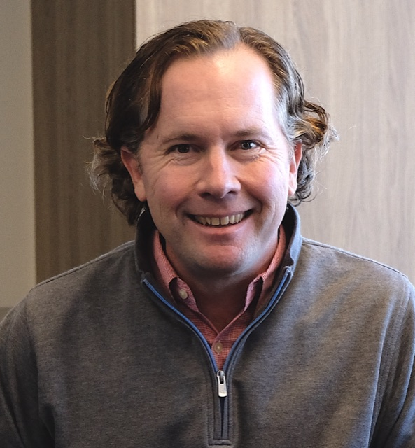

Joe Waltman
I build automation that removes manual work from field and multi-site operations.

What I do
I build software that removes repetitive manual work from operations. The document handling, reporting and follow-through that accumulates in businesses servicing physical assets and equipment.
I spent the past year deep in AI development, building things and working out where it is genuinely useful and where it is noise. Most of what gets marketed as AI for operations solves a problem that was never expensive. The work actually worth automating tends to be unglamorous: the same document produced fifty different ways across fifty locations, the follow-up that never happens, the number nobody can see across the whole business.
My focus is multi-site service businesses. Companies operating through branches, or that have grown by acquisition, where the same process runs differently everywhere.
Background
- 2018–2022 Group Product Manager, Coinbase
- 2014–2017 Co-Founder, VetPronto (mobile veterinary care)
- 2009–2012 Co-Founder, RestEngine (acquired by Twitter)
- 2006–2008 Business Development Manager, Boost Mobile
- 2003–2006 Associate, Sports Alliance
- 2000–2001 Senior Technical Consultant, Akamai
- 1999–2000 Co-Founder, VP of Technology, Todosport Network
- 1996–1999 Network Engineer, Qualcomm
- INSEAD, MBA
- University of Southern California, MS Computer Science
- UC Berkeley, BA International Relations, minor in Computer Science
What I’m working on now
August 2026
I am spending this year understanding what breaks operationally when a multi-site service business grows by acquisition. At the moment that means talking with operators in fire and life safety about inspection and testing programs, deficiency follow-through, and what it takes to get acquired companies reporting on the same basis.
I am not selling anything at this stage. If you run operations at a business like that and want to compare notes, I would like to hear from you.
Contact
San Diego, California